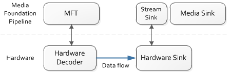

description: Indicates whether a media sink supports hardware data flow.
ms.assetid: 15838467-D253-4ECE-B9E7-AFD3A21B3AF2
title: MF_STREAM_SINK_SUPPORTS_HW_CONNECTION attribute (Mfidl.h)
ms.topic: reference
ms.date: 05/31/2018
MF_STREAM_SINK_SUPPORTS_HW_CONNECTION attribute
Indicates whether a media sink supports hardware data flow.
Data type
BOOL stored as UINT32
Remarks
This attribute is used when a media sink proxies a hardware device and is able to receive data over a hardware bus. For example, a hardware audio decoder might send audio data directly to the audio rendering hardware.
In this scenario, the decoder and the sink are still represented in the Microsoft Media Foundation by a Media Foundation transform (MFT) and a media sink. However, no data flows between these two objects at the pipeline layer, only at the hardware layer, as shown in the following diagram.

The connection between the MFT and the media sink is negotiated as follows.
- The pipeline checks if the MFT is a hardware proxy, by checking for the MFT_ENUM_HARDWARE_URL_Attribute attribute on the MFT. For details, see Hardware MFTs.
- The pipeline gets a pointer to the IMFStreamSink interface of the stream sink on the media sink.
- The pipeline uses the IMFStreamSink pointer to query for the MF_STREAM_SINK_SUPPORTS_HW_CONNECTION attribute. If this attribute is present and equal to TRUE, the media source supports hardware connections.
- The pipeline sets the MFT_CONNECTED_STREAM_ATTRIBUTE attribute on the stream sink. The value of this attribute is the IMFAttribute pointer from the MFT.
- The pipeline sets the MFT_CONNECTED_TO_HW_STREAM attribute to TRUE on both the stream sink and the MFT.
Requirements
| Requirement |
Value |
| Minimum supported client |
Windows 8 [desktop apps | UWP apps] |
| Minimum supported server |
Windows Server 2012 [desktop apps | UWP apps] |
| Header |
Mfidl.h |
See also
Alphabetical List of Media Foundation Attributes
Â
Â